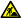
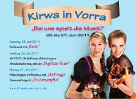

Termine 2011
- Januar
- Sonntag, 02.01. um 20:00 Uhr: Jahreshauptversammlung in der Kirwaboumhütte.
- Februar
- Sonntag, 20.02.: Gemeindeschießen SG Artelshofen. Zeitungsbericht in der Hersbrucker Zeitung.
- Samstag, 26.02. ab 20:00 Uhr: 1000 Jahre Vorra: Faschingsball in der Turnhalle mit Zhenil.
- März
- Freitag, 11.03. ab 19:00 Uhr: Kbh geöffnet.
- Mittwoch, 23.03. um 18:00 Uhr: Arbeitdienst auf der Kbh.
- April
- Samstag, 09.04. ab 20:00 Uhr: 1000 Jahre Vorra: Bierfest in der Turnhalle mit den Wilden.
- Mittwoch, 20.04. um 18:00 Uhr: Arbeitdienst auf der Kbh.
- Freitag, 29.04. ab 19:00 Uhr: Kbh geöffnet. Es gibt geräucherte Forellen.
- Mai
- Freitag, 13.05. ab 19:00 Uhr: Kbh geöffnet. Es gibt Brotzeit.
- Mittwoch, 18.05. um 18:00 Uhr: Arbeitdienst auf der Kbh.
- Juni
- Sonntag, 05.06. um 14:00 Uhr: 1000 Jahre Vorra: Teilnahme am historischen Festzug.
- Von 25. bis 27.06. ist Kirwa! 
Die Musik steht schon fest:
Samstag: Rokit
Sonntag: Pegnitzer Boum
Montag am Birghäusl: Die Fregga
Montag Abend: Die Versumpftn - Juli
- Samstag, 16.07. ab 20:00 Uhr: Italienische Nacht mit Musik beim Toni.
- Mittwoch, 13.07. um 18:00 Uhr: Arbeitdienst auf der Kbh.
- Freitag, 15.07. ab 19:00 Uhr: Kbh geöffnet. Es wird gegrillt.
- August
- Samstag, 13.08. um 08:00 Uhr: Tagesausflug zum Gäubodenfest nach Straubing. Treffpunkt am Bahnhof.
- Mittwoch, 17.08. um 18:00 Uhr: Arbeitdienst auf der Kbh.
- Samstag, 20.08.: 1000 Jahre Vorra: Oldtimer Treffen mit Live Musik im Schloss.
- September
- Freitag, 09.09. ab 19:00 Uhr: Kbh geöffnet.
- Mittwoch, 28.09. um 18:00 Uhr: Arbeitdienst auf der Kbh.
- Oktober
- Freitag, 14.10. ab 19:00 Uhr: Kbh geöffnet. Es gibt Sülze.
- Samstag, 22.10. ab 20:00 Uhr: 1000 Jahre Vorra: Weinfest in der Turnhalle.
- November
- Freitag, 11.11. ab 19:00 Uhr: Kbh geöffnet.
- Samstag, 19.11. um 18:30 Uhr: Nachtwanderung zum Schinkenessen bei Pechwirt. Treffpunkt am Rathaus.
- Dezember
- Samstag, 10.12. ab 19:30 Uhr: Weihnachtsfeier bei Toni.
- Samstag, 31.12. ab 20:00 Uhr: 1000 Jahre Vorra: Silvesterball mit Flashlight.
- Januar 2012
- Montag, 02.01.2012 um 20:00 Uhr: Jahreshauptversammlung in der Kirwaboumhütte.
{kind=link}
Termine vergangener Jahre:
2018
2017
2016
2015
2014
2013
2012
2011
2010
2009
2008
2007
2006